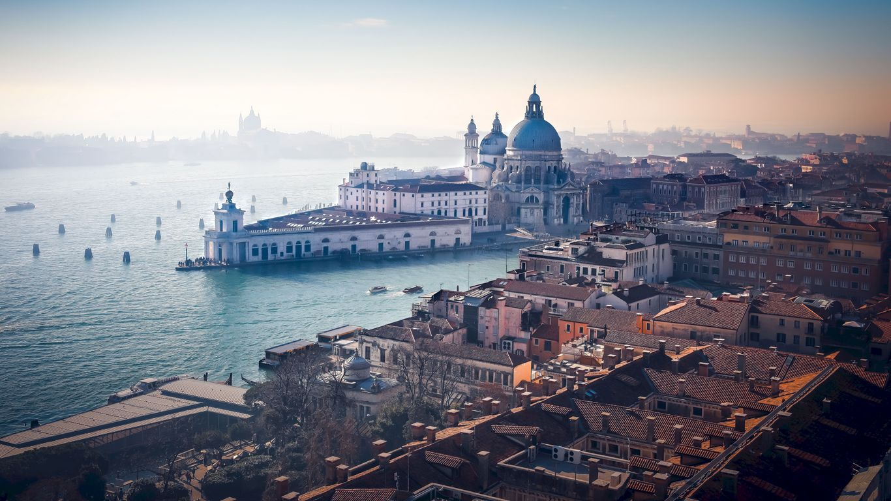
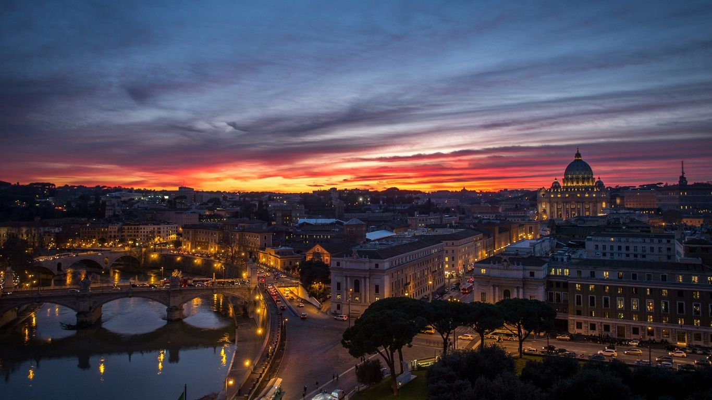

Do you want to visit Italy?



Looking through the guide and choosing what to see in Italy, you can not miss the most famous enclave in the world, which is the Vatican. Each building of this mini-state is a landmark known far beyond the borders of the country. Here you can walk along the alleys of the famous Vatican Gardens and see the Pope with your own eyes, climb the dome of St. Peter's Basilica, visit the Sistine Chapel with its immortal frescoes created by Michelangelo, Botticelli and other great painters.
When choosing the sights of Italy that you should definitely visit on your first visit, you cannot miss such a monumental building as the Roman Pantheon. Originally built in 25 BC, it was destroyed several times by natural disasters, rebuilt and even "changed religion". But until now, hundreds of people daily strive to get under its arches in order to stand under the dome, admire the beautiful frescoes and statues, feel the breath of eternity and the inexorable destructive power of time at the same time.
Considering the sights of Italy, it is impossible not to single out the Castel del Monte castle with its unusual architecture and mysterious history among them. Despite the fact that it was built in the middle of the 13th century, when there were constant wars, its design is fundamentally different from the buildings of that era.
The sights of Italy cannot be imagined without the Colosseum. This is a huge amphitheater, built back in 72 AD. and became the main symbol of the Roman Empire. This building at one time accommodated 55 thousand people, and the fame of it spread far beyond the borders of the country. Even with the development of modern technology and the availability of heavy construction equipment, it is difficult to carry out the construction of such a grand structure. Therefore, when choosing what to see in Italy, you cannot miss a visit to the Colosseum.
On November 1, 1509, thousands of Romans, led by Pope Julius II, froze in admiration and bowed their heads before the great genius Michelangelo Buonarotti, seeing the vault of the Sistine Chapel. They say that even envious and slanderous masters recognized his talent and perfection of paintings. More than five hundred years have passed, and the images of the sibyls, the first people, prophets and other biblical characters continue to attract people from all over the world, make hearts skip a beat and serve as a hymn to talent and hard work. Many who have experienced this feeling say that it is a must to visit the Sistine Chapel in Italy once, and then return and relive it all over again.

If you ask the Milanese what to visit in Italy, they will not hesitate to name the cathedral, built in honor of the Nativity of the Blessed Virgin Mary and which is the symbol of the city. This monumental building can simultaneously accommodate up to 40,000 people, which makes it one of the largest Gothic churches in the world.
It is almost endless to describe and admire Venice. This fabulous city on the water, conveniently spread over more than a hundred islands connected by numerous bridges, is a real paradise for romantics.
If you want to see the real southern Italy, go to Naples. A city where Diego Maradona is respected no less than the Pope. It is also known for the nearby volcano Vesuvius. The most interesting articles about Naples on the site Italy for me!
Florence is one of the pearls in the necklace of the most beautiful cities in Italy. This city is famous for its beautiful views, has a rich historical and cultural heritage, which is reflected in the architecture and appearance of buildings.
The sights of Siena are interesting because many houses, palaces and temples have been preserved in their original form. Many of them were pardoned even by the bombings of the Second World War, which destroyed many architectural masterpieces.
The city of Pisa - one of the beautiful pearls of the Tuscany region - many tourists associate, first of all, with the world-famous "leaning tower". Of course, this amazing building is the hallmark of the city, but in addition to the city bell tower in Pisa, there is something to see.
Italian Verona is perhaps one of the most romantic cities in the world, sung by the great Shakespeare, shrouded in many secrets and mysteries and invariably attracting hundreds and thousands of tourists, each of whom seeks to find something special in this place.